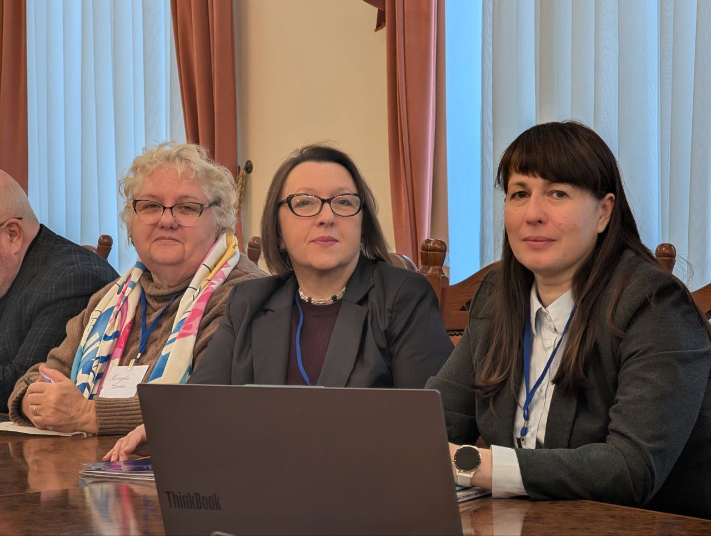
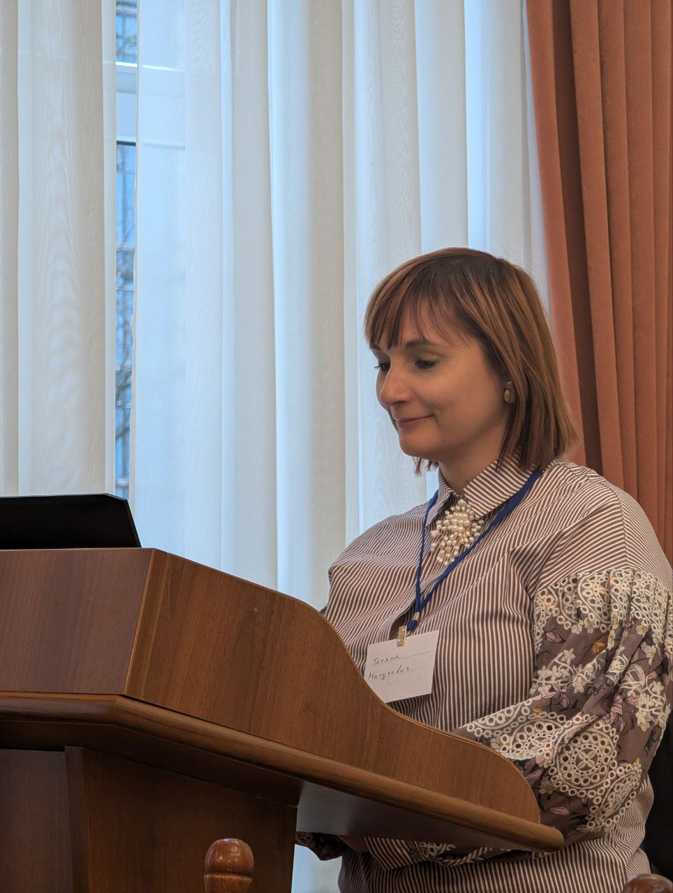

Launch of the Erasmus+ CBHE project "Empowering Educators for a Sustainable Future: Enhancing Teacher Training Capacity for Ukraine's Reconstruction"
On November 20–21, 2025, the kick-off meeting of the new Erasmus+ CBHE project “Empowering Educators for Sustainable Future: Enhancing Teacher Training Capacity for Ukraine's Recovery” (101237551 — EESF — ERASMUS-EDU-2025-CBHE) took place, the coordinator/grantholder of which is the Mykhailo Dragomanov Ukrainian State University.


The project consortium partners are Uzhhorod National University, National University "Ostroh Academy", Hryhoriy Skovoroda University in Pereyaslav, Association of Experts on Sustainable Development, Mendel University in Brno (Czech Republic), University of the National Education Commission in Krakow (Poland), Carlos III University in Madrid (Spain).
.jpg)
For Dragomanov University, the project will be an excellent opportunity for comprehensive capacity building, as representatives of 6 faculties are involved in its implementation, including the Faculty of Social and Humanities, the Faculty of History, the Faculty of Pedagogy, the Faculty of Technology and Design, the Faculty of Special and Inclusive Education, and the Faculty of Mathematics, Informatics, and Physics.
We are working together to ensure that Ukrainian education becomes the foundation of a sustainable future for our state. The project's kick-off event made it possible to identify key goals, agree on strategies for their implementation, and form a team of highly professional specialists who have already begun work on the first tasks. Through joint efforts, we aim not only to improve the quality of pedagogical education, but also to contribute to the restoration of Ukraine through the development of human potential, inclusiveness, and sustainability. The project opens up broad prospects for international partnership, academic mobility, and the implementation of best European practices, which will be an important contribution to the modernization of the Ukrainian education system.